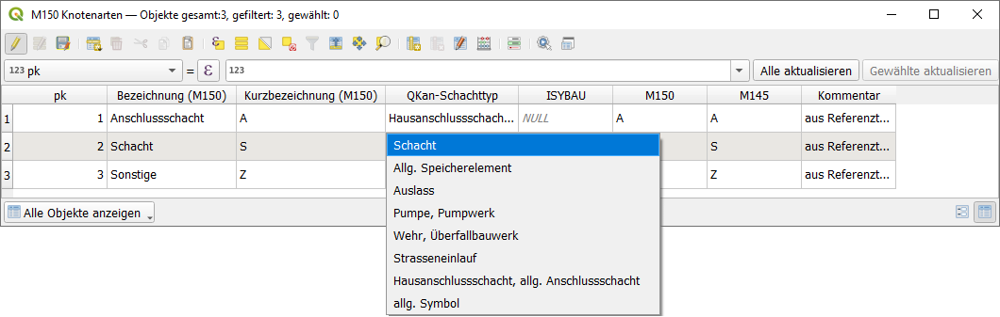

Datenaustausch mit DWA-M 150
Import aus DWA-M150
Mit der Funktion  Import aus DWA-150-XML können DWA-M150-Dateien im
XML-Format in ein QKan-Projekt importiert werden.
Import aus DWA-150-XML können DWA-M150-Dateien im
XML-Format in ein QKan-Projekt importiert werden.

Datenquelle
In diesem Bereich wird die XML-Datei ausgewählt. Darunter muss das Projektionssystem ausgewählt werden, in dem die Daten in der Datenquelle gespeichert sind. In dem gleichen Projektionssystem wird das QKan-Projekt aufgebaut, sodass beide Projektionssysteme identisch sind.
Datenart
Mit dem Auswahlfeld kann das Bewertungssystem festgelegt werden, das in der XML-Datei verwendet wurde.
Datenbank-Verbindung
Hier wird das Datenziel - die Sqlite-Datenbank - ausgewählt. Ist noch keine Zieldatenbank vorhanden, wird diese neu aus der QKan-Vorlage erzeugt. Andernfalls werden die Daten beim Import zu den bestehenden hinzugefügt.
Projektdatei erzeugen
Werden die Daten in ein bereits existierendes Projekt geladen, dann ist hier bereits der Pfad der verwendeten Projektdatei angegeben. Existiert noch keine Projektdatei, kann diese hier erstellt werden. Dabei ist es empfehlenswert, diese im selben Verzeichnis mit der QKan-Datenbank zu speichern.
Zu importierende Daten
Mit der Auswahl können die zu importierenden Daten eingegrenzt werden. Wenn alle Haken gesetzt sind, werden alle in der Datei enthaltenen Daten importiert. Andernfalls werden sie beim import übergangen.
Quelle TV-Befahrungen
Die Auswahl der beiden Verzeichnisse für Bilder und Videos dient dazu, deren Speicherort festzulegen.
Start des Importes
Wenn in der zu importierenden Datei individuelle Knotentypen abweichend vom M150-Standard (Referenztabelle Nr. 116 „Knotenart“ gemäß DWA-M 150) enthalten sind, muss wegen der abweichenden Interpretation von Sonderbauwerken in QKan gegenüber der DWA-Richtlinie eine Zuordnung zu der Knotenarten zu den Schachttypen in QKan vorgenommen werden.
Der Dateiimport zeigt die entsprechende Tabelle an, damit nach Aktivierung des Bearbeitungsmodus der Anwender die Spalte QKan-Schachttyp entsprechend bearbeitet. Solange diese Zuordnung nicht vollständig ist, wird statt des Datenimportes jedes Mal diese Tabelle angezeigt.
Ausführliche Erläuterungen zu dieser Funktion finden Sie im Kapitel DWA-M 150
Export nach DWA-M150
Mit der Funktion  Export nach DWA-150-XML können Daten aus einem QKan-Projekt
in eine DWA-M150-Datei exportiert werden.
Export nach DWA-150-XML können Daten aus einem QKan-Projekt
in eine DWA-M150-Datei exportiert werden.

Exportdatei
Hier wird das Datenziel - die DWA-150-XML-Datei - festgelegt.
Aktuell berücksichtigt
Falls in den Layern Schächte und Haltungen Objekte ausgewählt sind, kann der Export auf diese Auswahl beschränkt werden. Die Vorschau aktualisiert sich nach jedem Klick auf eines der beiden Kontrollkästchen.
Das Kontrollkästchen Fehlende Profil- und Entwässerungsart zulassen bewirkt, dass auch Datensätze exportiert werden, bei denen die Attribute Profil und Entwässerungsart in den Tabellen Schächte und Haltungen keine gültigen Werte haben.
Die Schaltfläche :guilabel: M150-Kürzel anzeigen legt, falls noch nicht vorhanden, einen Layer M150 Kürzel zu ergänzen in der Gruppe M 150 an und öffnet diesen. Er dient zur Kontrolle der Referenztabelle und zeigt rot hinterlegt die Datensätze an, bei denen in der Spalte Kürzel der Eintrag gemäß DWA-M 150 ergänzt werden muss. Es wird empfohlen, nach Änderungen in dieser Tabelle eine der beiden Kontrollkästchen anzuklicken, um die Anzeige der berücksichtigten Schächte und Haltungen zu aktualisieren.

Exportieren
Mit den Kontrollkästchen können die zu exportierenden Tabellen ausgewählt werden.